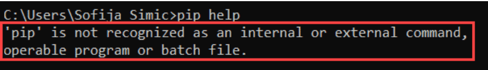
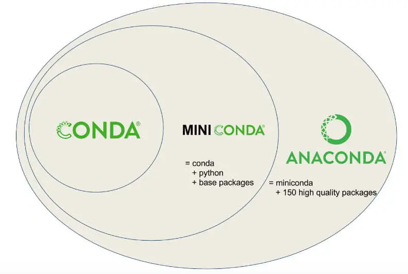

Pip vs. Conda: Two Top Tools for Managing Python Packages
Pip and Conda are two of the most common tools that Python developers use to install third-party libraries. Pip is a tool that’s tightly integrated with modern versions of Python, while conda is a separate tool that provides additional functionality.
In this article, we introduce both tools and compare them. We also give basic usage instructions for each.
What is pip?
Pip is a basic command-line tool for introducing python bundles. It is the norm and the suggested approach to introducing bundles from all the distributed python bundles in the Python Package Index (PyPI). (For installing packages to PyPI, see the related article, Python Packages Using Setuptools).
If you’re running a newer version of Python (3.4 or higher), you already have pip installed on your computer. If you are running an older variant of Python, you might have to install PIP. You can install Pip without much difficulty.
In the section that follows, we give the instructions for this on Windows. This basically involves downloading the installation bundle, opening the command line, and running the installer.
Installing pip on Windows
Prerequisites:
Computer running Windows or Windows server
Access to the Command Prompt window
Install pip on your PC:
Before you install pip on Windows, check to see if it is already installed.
1. Open the run window:
Press Windows Key + X.
Click Run.
Type in cmd.exe and hit enter.
2. Type in the accompanying order in the run window:
Type pip help and press enter
If pip responds, then it is installed. Otherwise, there will be an error saying the program could not be found.

If you receive the error as shown in the above picture then probably pip is not installed on your computer. In this case, you should work through the following steps to install pip on your PC.
Step 1. Getting the get-pip.py file
Now before installing the pip on your PC, first download the get-pip.py file.
Open a command prompt if you don’t have one open. To do this, open the Windows search bar, type cmd and click on the symbol.
Copy and run this in the command prompt:
curl https://bootstrap.pypa.io/get-pip.py -o get-pip.py
Output:
Step 2: Running get-pip.py
Now is the time to install pip on your PC, type the following command in your command prompt and press enter.
python get-pip.py
Output:
Step-3: Validating the Installation
After installing pip on your computer, the next step is to check if it is installed correctly. You can check if pip is installed successfully on your PC by typing the following command in your command prompt.
pip help
If PIP has been installed, the program runs, and you should see the location of the software package and a list of commands you can use with pip.
Step 4: Adding pip to the system PATH
If you’re able to run pip after following the process above, great! However, if you get an error to the extent that pip was not found, you need to add pip to the system path. Here’s how to do this:
Open Control Panel, and open the System and Security window.
Click on System to open System settings.
Then, select Advanced system settings.
Open the Environment Variables and double-click on the Path variable in the System Variables.
Next, select New and add the directory where you installed PIP.
Click OK to save the changes.
Now you have successfully added pip to your environment variable, now you can easily use it from any location in your PC. Note that if you have a command prompt open, you’ll need to close it and open a new one.
What is Virtualenv?
Virtual environments are isolated installation directories for Python packages. This isolation permits you to restrict the installation of your project dependencies, which prevents problems, for example, when different versions of the library are installed by different projects.
virtualenv is a tool used to establish separated Python conditions. It makes a folder that contains all the fundamental executables to utilize the bundles that a Python project would require.
You can install virtualenv using pip on your computer. Open your command line prompt and enter the following code then press enter.
pip install virtualenv
After pressing enter, the installation will start, don’t interrupt the installation. Once virtualenv is successfully installed on your computer, you can verify the installation by entering the following command in your command line prompt.
virtualenv –version
If it is correctly installed, you will see the version of vistualenv.
Creating an environment:
Now after the installation is done and you have checked and verified the installation, the next step is to create the virtual environment. Use the following command to create a virtual environment.
virtualenv venv
This makes a folder in the current registry with the name of the environment (venv/). This folder contains the directories for introducing modules and Python executables.
You can likewise indicate the Python version you need to work with. Simply add the setting:
- - python=/path/to/python/version. For example, for python2.7:
virtualenv --python=/usr/bin/python2.7 venv
You can activate the environment before using it by using the following command.
source venv/bin/activate
This ensures that only packages under venv/ are used.
You will notice that the name of the environment is shown on the left of the prompt. This way you can see which environment is active.
You can install packages one by one, or by setting a requirements.txt file for your project.
pip install some-package
pip install -r requirements.txt
If you want to create a requirements.txt file from the already installed packages, run the following command:
pip freeze > requirements.txt
The file will contain the list of all the packages installed in the current environment and their respective versions. This will help you release your project with its own dependent modules.
What is conda?
Conda is an open-source package and environment management system that runs on Windows, Mac OS, and Linux.
Conda can quickly install, run, and update packages and associated dependencies.
Conda can create, save, load, and switch between project specific software environments on your local computer.
Although Conda was created for Python programs, Conda can package and distribute software for any language such as R, Ruby, Lua, Scala, Java, JavaScript, C, C++, FORTRAN.
Conda as a bundle supervisor helps you find and introduce packages. Assuming you want a package that requires an alternate variant of Python, you don’t have to change to an environment manager, in light of the fact that Conda is likewise an environment manager. With only a couple of commands, you can set up a thoroughly separate environment to run that different version of Python, while proceeding to run your standard version of Python in your default environment.
Conda can be installed in one of three ways. First, conda is a part of the Anaconda distribution, which also includes many other libraries (some of which you may not need).
Secondly, as an alternative to Anaconda, you can choose to install miniconda, a minimal installer for conda that includes conda and its dependencies (Python, the packages they depend on, and a small number of other useful packages, including pip, zlib, and a few others).
Finally, if you already have python version installed that your happy with, conda ca be installed independently of Anaconda/miniconda, in a system that has Python and pip installed using:
pip install conda
After installation, you can begin creating environments with Conda or Virtualenv on your machine
Conda provides a fairly robust set of commands to create environments. This can be done with the conda create command. The environment can either be made from scratch or from an existing environment.yml file. Based on an environment.yml, a Conda environment can be created in the following manner:
conda env create -f environment.yml
After creating a Conda environment, the environment can then be activated using the command:
conda activate blog-post
environment.yml is the source of truth for packages. environment.yml is a reference point where you can see all the required dependencies for an environment, the repository to install those packages from, and the environment name.
Why Should You Use Conda?
Of the many different package and environment management systems around Conda is one of the few explicitly targeted at data scientists.
Conda provides prebuilt packages or binaries (which generally avoids the need to deal with compiling packages from the source). TensorFlow is an example of a tool widely used by data scientists which is difficult to install source (particularly with GPU support), but that can be installed using Conda in a single step.
Conda is cross-platform, with support for Windows, macOS, GNU/Linux, and support for multiple hardware platforms, such as x86 and Power 8 and 9.
Where a library or tools is not already packaged for installation using conda, Conda allows for using other package management tools (such as pip) inside Conda environments.
Using Conda you can quickly install commonly used data science libraries and tools, such as R, NumPy, SciPy, Scikit-learn, Dask, TensorFlow, PyTorch, Fast.ai, NVIDIA RAPIDS, and more built using optimized, hardware-specific libraries (such as Intel’s MKL or NVIDIA’s CUDA), which provides a speedup without having to change any of your code.
What is miniconda?
Miniconda is a slimmed-down distribution version of Anaconda. It has all the components of the Anaconda distribution, except the 200+ pre-installed data science applications. With the various Mini condo installers, you will get the core Python language, and a package manager tool (Conda).
Following a successful installation of the Miniconda distribution, you can use the command line to install the packages you need individually. As such, Miniconda offers all the benefits of the Anaconda distribution with minimal space requirements.
Owing to the smaller file size and reduced disk space requirements, Miniconda is relatively faster to install as compared to the Anaconda distribution.
What is Anaconda?
You should opt for the Anaconda distribution if you:
Are rather new to the Python language or Conda commands
Happen to have the extra disk space and time required to install all the 720+ on this distribution.
Do not wish to install the packages you require individually, as is the case with the Miniconda distribution.
Need a distribution for classes, as Anaconda contains most of the packages you will ever need.
If you happen to have some programming experience, you should consider installing the standard Python distribution instead. However, this distribution required you to manually configure additional library dependencies.
Conda vs. Miniconda vs. Anaconda
Users are often confused about the differences between Conda, Miniconda, and Anaconda. The Planemo documentation has an excellent diagram that nicely demonstrates the difference between the Conda environment and package management tool and the Miniconda and Anaconda Python distributions (N.B. the Anaconda Python distribution now has well more than 150 additional packages!).

I suggest installing Miniconda which combines Conda with Python 3 (and a small number of core systems packages) instead of the full Anaconda distribution. Installing only Miniconda will encourage you to create separate environments for each project (and to install only those packages that you actually need for each project!) which will enhance the portability and reproducibility of your research and workflows.
Besides, if you really want a particular version of the full Anaconda distribution you can always create a new conda environment and install it by using the following command.
conda create --name anaconda-2020-02 anaconda=2020.02
Conda vs Pip
In this section we want to briefly compare conda and pip, and consider questions such as the following:
How are they unique?
What are the tradeoffs between the two?
Which would it be advisable for you to use?
Now let’s talk about the fundamental difference between conda and pip, The key distinction between pip and Conda bundling is what they put in bundles.
Pip bundles are Python libraries like NumPy or matplotlib.
Conda bundles incorporate Python libraries (NumPy or matplotlib), C libraries (libjpeg), and executables (like C compilers, and, surprisingly, the Python translator itself).
The following table lists some other differences between conda and pip.
| Point of Difference | pip | Conda |
| Multi-Language Dependency | Not Supported | Supported |
| Package Installation | Builds from source or downloads wheels | Downloads binary packages. |
| Package Availability | 235,000 packages | 1,500+ packages |
| Dependency Management | No SAT test | Performs SAT test (i.e., checks a number of constraints to make sure package dependencies do not conflict). |
| Virtual Environment Management | No in-built virtual environment management | In-built virtual environment management system |
| Minimalistic | yes | no |